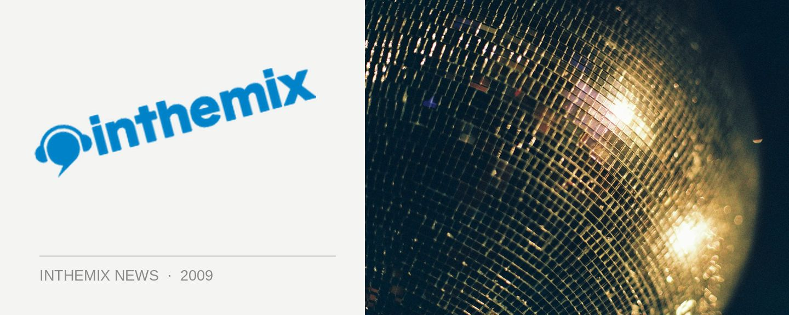

Want to play live at Bondi Beach's Shore Thing this NYE?
Fuzzy’s regular NYE bash Shore Thing at Bondi Beach is already shaping up to be an impressive choice of where to be for the closing moments of 2009, with a massive triple-header of DJ icons lined up to headline the party. But together with inthemix, Fuzzy are offering an extra special prize to an aspiring Australian live act. How would you like to be flown in from your corner of the country, to warm up the stage for Danny Tenaglia, Carl Cox, Roger Sanchez, and then actually be paid for the privilege? Here’s your chance to make it happen.
If you’re into making and performing your own original live dance music, then be sure to get your entry in. The winning group will be flown into Sydney and put up in a hotel for two nights. They’ll get their own dressing room and rider at Shore Thing, opening the party on the mainstage, and actually getting paid for the job!
CHECK HERE FOR ALL THE INFO ON HOW YOU CAN WIN THE CHANCE TO PLAY LIVE AT SHORE THING ON NYE.
What a prize hey? We know there are loads and loads of amazing live dance acts around the country who deserve to be seen and heard, so if you think youv’e got what it takes, make sure you get your entry in by the closing date of November 29th.
Shore Thing returns to Bondi Park on Thursday December 31st. Tickets on sale now at ITM!